Ordem de manutenção/metrologia
A tela de ordem de manutenção/metrologia pode ser acessada pelo menu:
Serviço -> Ordem de manutenção/metrologia
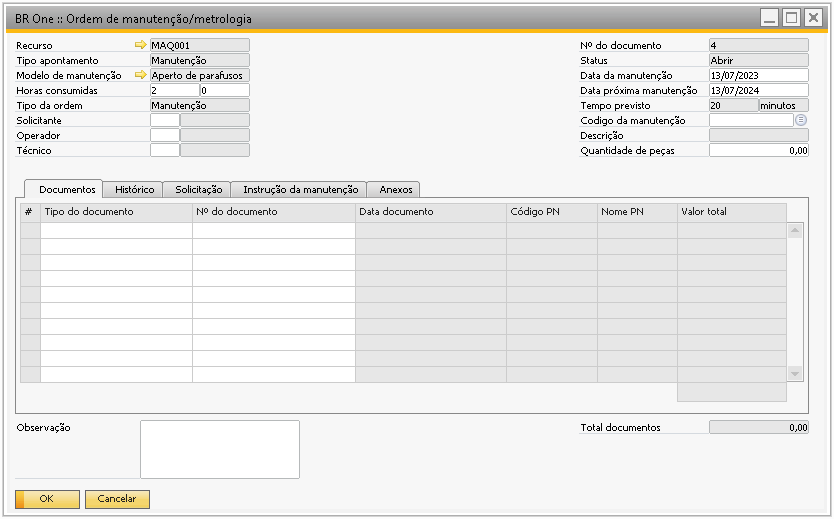{kind=link}
No cabeçalho da tela o usuário informa qual o recurso que passará por uma manutenção ou metrologia.
O campo Tipo de apontamento pode ser cadastrado no menu:
Administração -> Definição -> Serviço -> Tipos apont. ordem manutenção
O Tipo de apontamento é um campo obrigatório e caso a opção selecionada tenha o parâmetro Modelo obrigatório marcado (conforme a imagem abaixo) o campo Modelo de manutenção será a ser obrigatório. O campo Tipo de apontamento vai indicar o motivo pelo qual aquela ordem de manutenção/metrologia está sendo aberta.
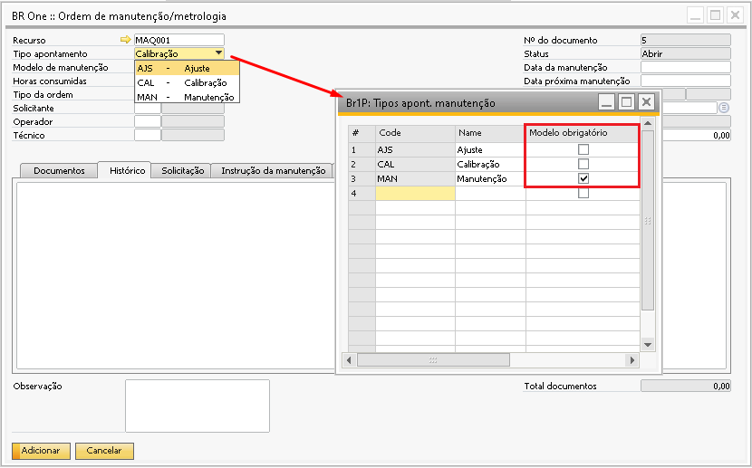{kind=link}
O campo Modelo de manutenção pode ser cadastrado através do menu:
Serviço -> Modelo de manutenção/metrologia
Caso um modelo seja selecionado, o campo Tipo da Ordem será preenchido automaticamente conforme o campo Tipo do modelo do modelo selecionado.
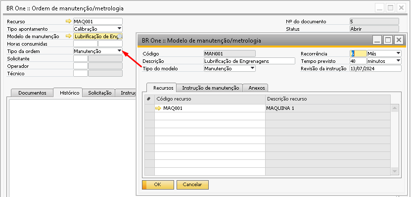{kind=link}
O Modelo de manutenção/metrologia pode ser vinculado a alguma Ordem de manutenção/metrologia quando há alguma orientação para aquela ordem. Por exemplo, uma ordem está sendo aberta para que o usuário possa fazer a calibração ou lubrificação de uma máquina e para realizar o procedimento já existe um passo a passo a ser seguido, então estes passos podem ser cadastrados em um modelo de manutenção e futuramente vinculado as ordens para que os técnicos possam seguir as orientações.
O “tempo previsto” cadastrado no modelo também é levado para a ordem e não pode ser alterado pois o campo fica bloqueado.
Campo horas consumidas não é um campo obrigatório para adicionar a Ordem e ela pode ser informada posteriormente.
O campo “Tipo” da ordem vai indicar se a ordem é sobre manutenção ou metrologia do recurso vinculado. Caso tenha selecionado um modelo, este campo virá preenchido automaticamente conforme o cadastro do modelo, mas pode ser alterado manualmente.
Dependendo do tipo da ordem escolhida, os campos pertinentes para a ordem serão ajustados em tela, como no print abaixo:
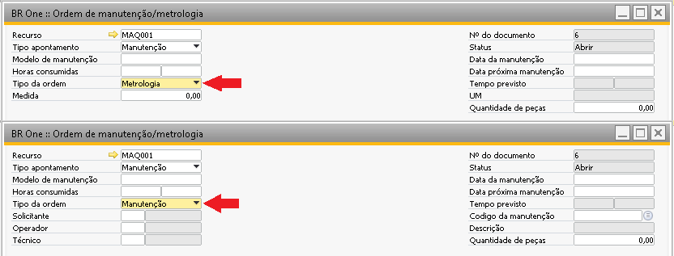{kind=link}
Caso a ordem seja de “Manutenção”, os campos de Solicitante, Operador e Técnico ficarão disponíveis para que o usuário possa identificar o quem solicitou e quem realizou a manutenção no equipamento.
Caso a ordem seja de “Metrologia” o campo Medida ficará disponível para preenchimento da informação, mas caso a ordem tenha um modelo vinculado do tipo metrologia onde o campo Medida está preenchido, esta informação será carregada na ordem.
Para uma ordem de manutenção do tipo manutenção está disponivel os seguintes campos para preenchimento:
Cadastro do Solicitante:
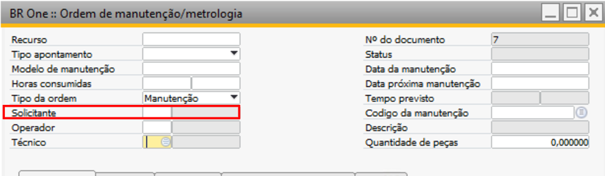Para o cadastro de um solicitante qualquer colaborador cadastrado consegue ser adicionado ao campo:
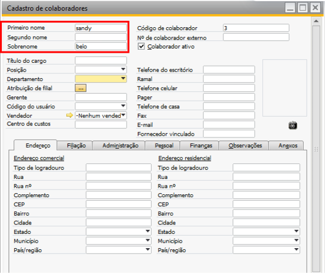 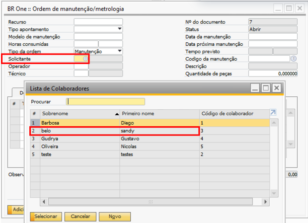Cadastro do Operador:
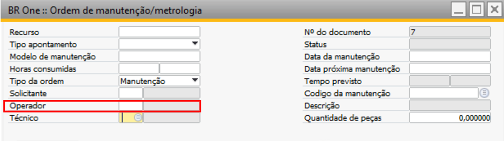Para o cadastro de um colaborador com a função de Operador é importante considerar alguns cadastros para definição:
No campo “departamento” ao selecionar “definir novo” será aberto a tela de “Departamento - Definição”
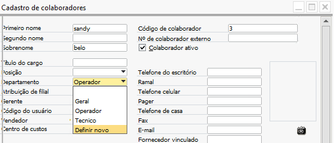 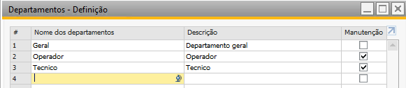Com isso ao definir a flag “Manutenção” para o colaborador. Sendo assim será listado o “Operador” na tela de Ordem de manutenção para o colaborador definido.
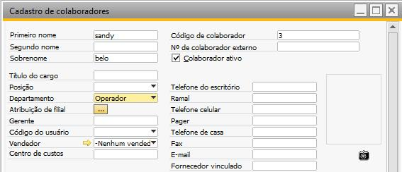 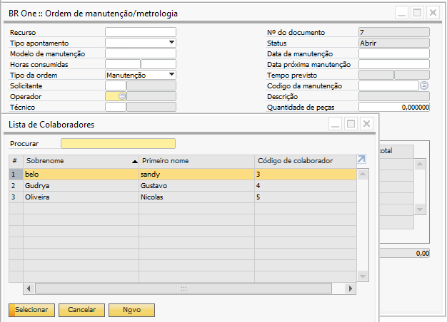Note que ao definir a flag “Manutenção” para o departamento do colaborador é listado, o colaborador é listado e atribuido, para listas de colaboradores da Ordem de manutenção.
Cadasto de Técnico:
Para o cadastro de um tecnico deve ser preenchido o campo “função” na aba Filiação -> Função. Ao selecionar a opção “Técnico” no campo da Ordem de manutenção será listado o colaborador.
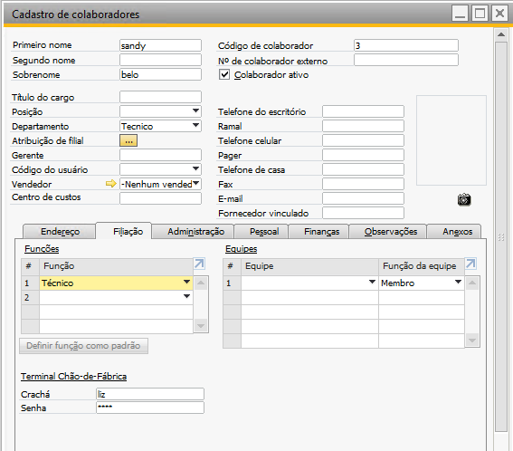 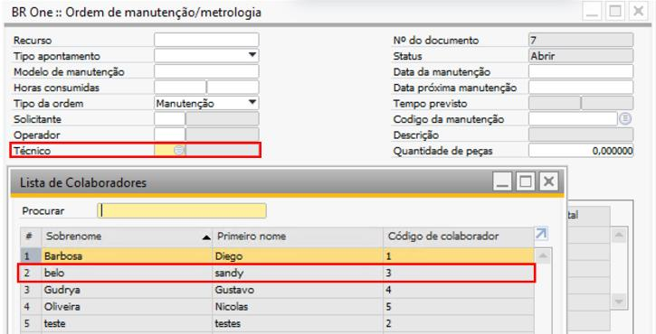Na lateral direita da tela, os campos de data ficam disponíveis para preenchimento manual, o campo Data da manutenção é obrigatório para adicionar a ordem e o campo Data da próxima manutenção é opcional, mas caso a ordem esteja sendo adicionada sem este campo a mensagem abaixo deixará um alerta para o usuário, porém clicando em Sim a ordem é adicionada mesmo com o campo vazio.
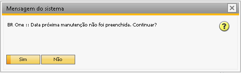{kind=link}
Quando a ordem é do tipo Manutenção, é possível vincular a causa da manutenção no campo código da manutenção. Ao selecionar o código a descrição também é preenchida automaticamente conforme a imagem abaixo:
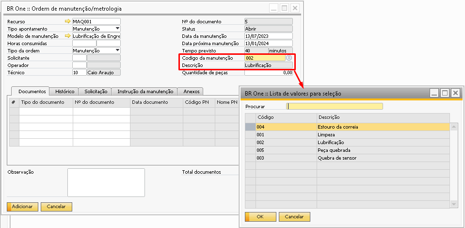{kind=link}
O código da manutenção pode ser cadastrado pelo caminho: Administração > Definição > Serviço > Causa da manutenção.
Quando a Ordem é do tipo Metrologia os campos Medida e UM aparecerão em tela, caso um modelo tenha sido selecionado esses campos serão preenchidos conforme o modelo, caso nenhum modelo tenha sido selecionado, apenas o campo Medida fica disponível para preenchimento do usuário.
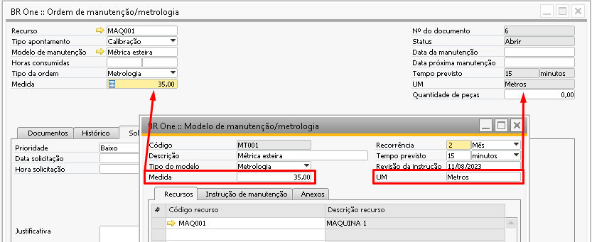{kind=link}
O campo Quantidade de peças permanece em tela independente do tipo de ordem e é aberto para o preenchimento do usuário.
Aba documentos:
A aba documentos é utilizada quando o usuário precisa vincular algum documento referente a ordem de manutenção. Por exemplo, para a manutenção de um recurso foi necessário comprar algumas peças, sendo assim, esta nota de entrada contendo as peças que serão utilizadas pode ser vinculada a esta ordem de manutenção, como no exemplo abaixo:
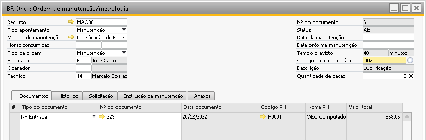{kind=link}
Os tipos de documentos disponíveis são os tipos > Notas fiscais de entrada e saída, saída de mercadoria e solicitação de compra, sendo que o usuário pode inserir na mesma ordem mais de um tipo de documento.
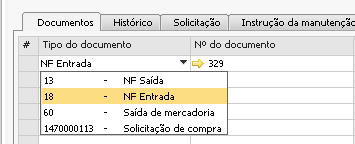 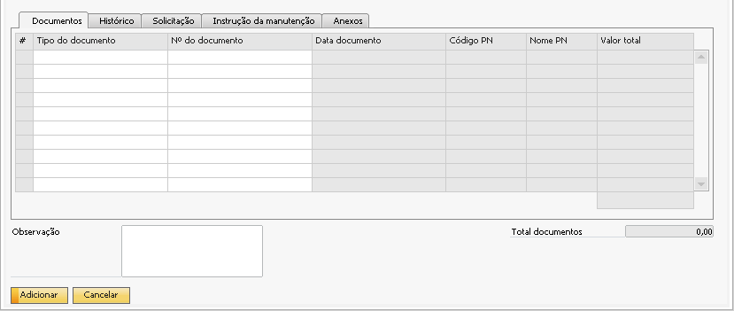{kind=link}
{kind=link}
Aba Histórico:
Na aba Histórico é possível inserir qualquer informação pertinente a ordem de manutenção/metrologia. Desta forma ao abrir uma ordem de manutenção/metrologia antiga existirá um histórico do que foi realizado, mas este campo não é obrigatório.
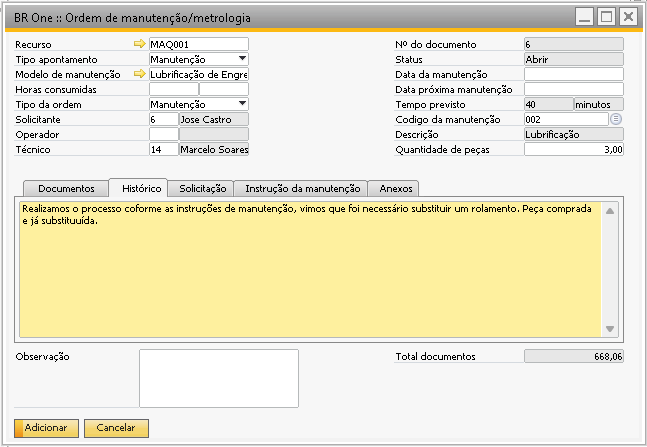{kind=link}
Aba Solicitação:
A aba Solicitação é o local onde a prioridade e justificativa da Ordem de manutenção/metrologia são informadas.
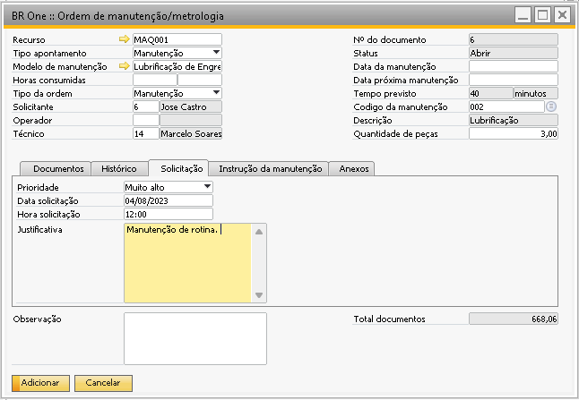{kind=link}
Aba Instrução da manutenção:
A aba Instrução da manutenção pode ser preenchida manualmente ou as instruções pode vir de um Modelo de manutenção/Metrologia vinculado. Mesmo que o preenchimento seja realizado a partir de um modelo, a informação presente pode ser alterada manualmente pelo usuário.
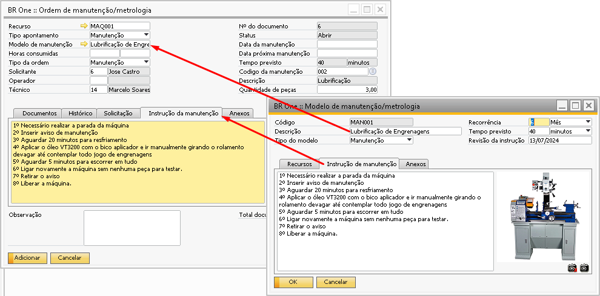{kind=link}
Aba Anexos:
Aba anexos é utilizada para vincular algum documento ou imagem pertinente a ordem de manutenção/metrologia. Caso um modelo seja vinculado todos os documentos vinculados na aba Anexos do modelo também estarão disponíveis na Ordem de manutenção. Caso o usuário queira inserir mais algum documento ou remover algum documento também é possível conforme a demonstração abaixo.
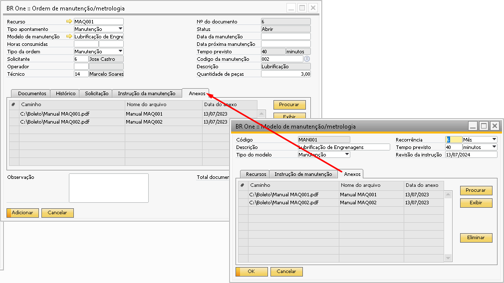 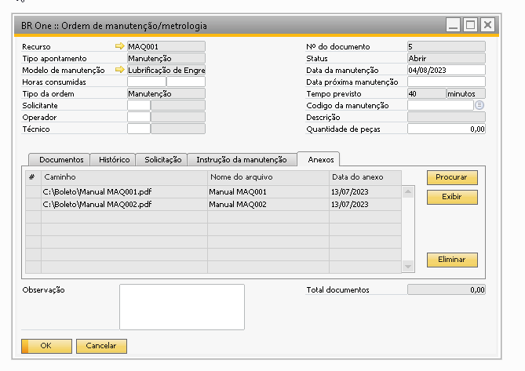{kind=link}
{kind=link}
O campo de Observação no rodapé da tela também é opcional.
O campo de Total documentos no rodapé será preenchido com a soma dos documentos da aba Documentos conforme o exemplo abaixo. Caso não seja vinculado nenhum documento o campo ficará vazio e não poderá ser editado pelo usuário.
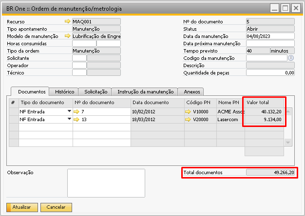{kind=link}
Após finalizada a Ordem de manutenção/metrologia ela pode ser fechada, mas para conseguir fechar será necessário que algum documento esteja vinculado a ordem ou o campo Horas consumidas seja preenchido.